2022 Higher Physics - Paper 2 marking instructions
Source: Scottish Qualifications Authority (SQA) / Qualifications Scotland. This is a StemInteract HTML companion, not an official HTML edition. Selectable text is supplied alongside original page images. Use the images or original PDF for equations, powers, fractions, vector notation, tables and diagrams; text extraction cannot fully preserve mathematical layout.
Jump to a question
PDF page 1
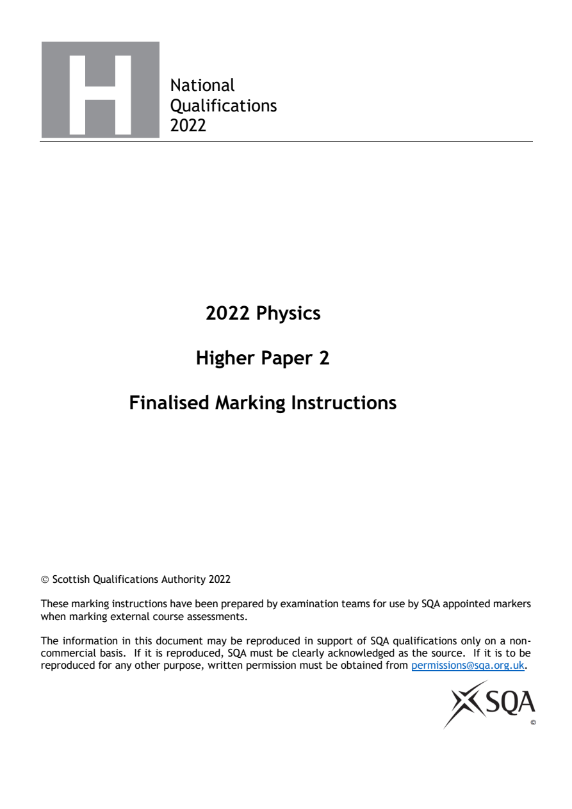
Selectable page text
National
Qualifications
2022
2022 Physics
Higher Paper 2
Finalised Marking Instructions
© Scottish Qualifications Authority 2022
These marking instructions have been prepared by examination teams for use by SQA appointed markers
when marking external course assessments.
The information in this document may be reproduced in support of SQA qualifications only on a non-
commercial basis. If it is reproduced, SQA must be clearly acknowledged as the source. If it is to be
reproduced for any other purpose, written permission must be obtained from permissions@sqa.org.uk.PDF page 2
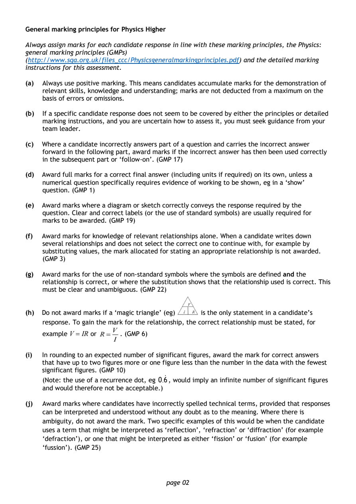
Selectable page text
General marking principles for Physics Higher
Always assign marks for each candidate response in line with these marking principles, the Physics:
general marking principles (GMPs)
(http://www.sqa.org.uk/files_ccc/Physicsgeneralmarkingprinciples.pdf) and the detailed marking
instructions for this assessment.
(a) Always use positive marking. This means candidates accumulate marks for the demonstration of
relevant skills, knowledge and understanding; marks are not deducted from a maximum on the
basis of errors or omissions.
(b) If a specific candidate response does not seem to be covered by either the principles or detailed
marking instructions, and you are uncertain how to assess it, you must seek guidance from your
team leader.
(c) Where a candidate incorrectly answers part of a question and carries the incorrect answer
forward in the following part, award marks if the incorrect answer has then been used correctly
in the subsequent part or ‘follow-on’. (GMP 17)
(d) Award full marks for a correct final answer (including units if required) on its own, unless a
numerical question specifically requires evidence of working to be shown, eg in a ‘show’
question. (GMP 1)
(e) Award marks where a diagram or sketch correctly conveys the response required by the
question. Clear and correct labels (or the use of standard symbols) are usually required for
marks to be awarded. (GMP 19)
(f) Award marks for knowledge of relevant relationships alone. When a candidate writes down
several relationships and does not select the correct one to continue with, for example by
substituting values, the mark allocated for stating an appropriate relationship is not awarded.
(GMP 3)
(g) Award marks for the use of non-standard symbols where the symbols are defined and the
relationship is correct, or where the substitution shows that the relationship used is correct. This
must be clear and unambiguous. (GMP 22)
(h) Do not award marks if a ‘magic triangle’ (eg) is the only statement in a candidate’s
response. To gain the mark for the relationship, the correct relationship must be stated, for
V
example V = IR or R = . (GMP 6)
I
(i) In rounding to an expected number of significant figures, award the mark for correct answers
that have up to two figures more or one figure less than the number in the data with the fewest
significant figures. (GMP 10)
(Note: the use of a recurrence dot, eg 0.6, would imply an infinite number of significant figures
and would therefore not be acceptable.)
(j) Award marks where candidates have incorrectly spelled technical terms, provided that responses
can be interpreted and understood without any doubt as to the meaning. Where there is
ambiguity, do not award the mark. Two specific examples of this would be when the candidate
uses a term that might be interpreted as ‘reflection’, ‘refraction’ or ‘diffraction’ (for example
‘defraction’), or one that might be interpreted as either ‘fission’ or ‘fusion’ (for example
‘fussion’). (GMP 25)
page 02PDF page 3
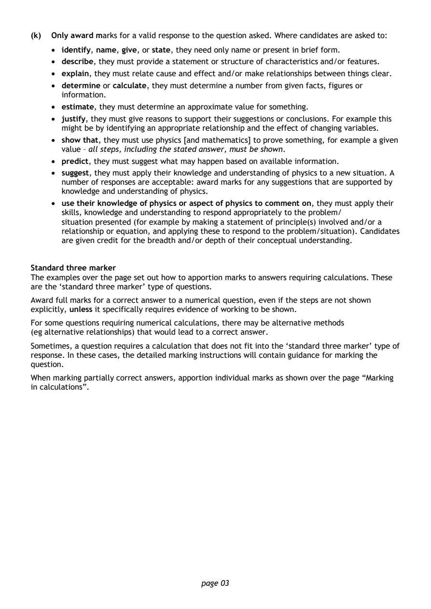
Selectable page text
(k) Only award marks for a valid response to the question asked. Where candidates are asked to:
• identify, name, give, or state, they need only name or present in brief form.
• describe, they must provide a statement or structure of characteristics and/or features.
• explain, they must relate cause and effect and/or make relationships between things clear.
• determine or calculate, they must determine a number from given facts, figures or
information.
• estimate, they must determine an approximate value for something.
• justify, they must give reasons to support their suggestions or conclusions. For example this
might be by identifying an appropriate relationship and the effect of changing variables.
• show that, they must use physics [and mathematics] to prove something, for example a given
value – all steps, including the stated answer, must be shown.
• predict, they must suggest what may happen based on available information.
• suggest, they must apply their knowledge and understanding of physics to a new situation. A
number of responses are acceptable: award marks for any suggestions that are supported by
knowledge and understanding of physics.
• use their knowledge of physics or aspect of physics to comment on, they must apply their
skills, knowledge and understanding to respond appropriately to the problem/
situation presented (for example by making a statement of principle(s) involved and/or a
relationship or equation, and applying these to respond to the problem/situation). Candidates
are given credit for the breadth and/or depth of their conceptual understanding.
Standard three marker
The examples over the page set out how to apportion marks to answers requiring calculations. These
are the ‘standard three marker’ type of questions.
Award full marks for a correct answer to a numerical question, even if the steps are not shown
explicitly, unless it specifically requires evidence of working to be shown.
For some questions requiring numerical calculations, there may be alternative methods
(eg alternative relationships) that would lead to a correct answer.
Sometimes, a question requires a calculation that does not fit into the ‘standard three marker’ type of
response. In these cases, the detailed marking instructions will contain guidance for marking the
question.
When marking partially correct answers, apportion individual marks as shown over the page “Marking
in calculations”.
page 03PDF page 4
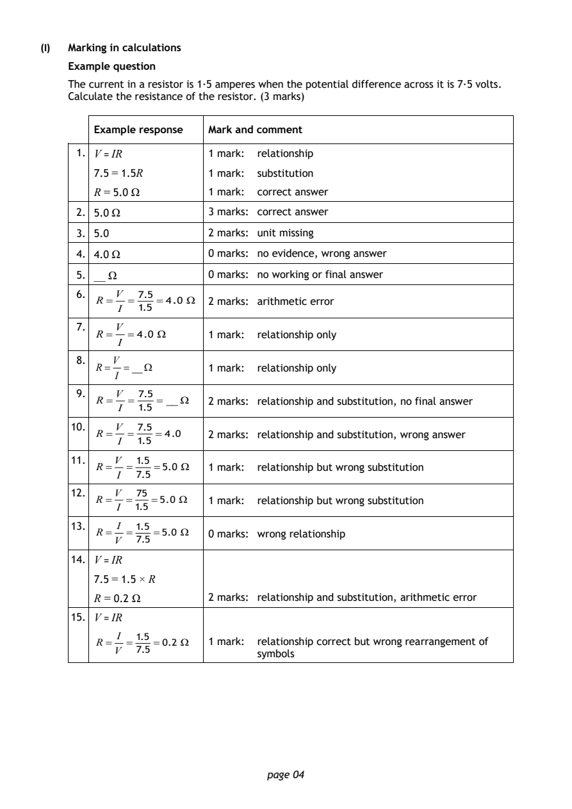
Selectable page text
(l) Marking in calculations
Example question
The current in a resistor is 1·5 amperes when the potential difference across it is 7·5 volts.
Calculate the resistance of the resistor. (3 marks)
Example response Mark and comment
1. V = IR 1 mark: relationship
7.5 = 1.5R 1 mark: substitution
R = 5.0 Ω 1 mark: correct answer
2. 5.0 Ω 3 marks: correct answer
3. 5.0 2 marks: unit missing
4. 4.0 Ω 0 marks: no evidence, wrong answer
5. __ Ω 0 marks: no working or final answer
6. V 7.5
R = = =4.0 Ω 2 marks: arithmetic error
I 1.5
7. V
R = =4.0 Ω 1 mark: relationship only
I
8. V
R= =__Ω 1 mark: relationship only
I
9. V 7.5
R = = = __Ω 2 marks: relationship and substitution, no final answer
I 1.5
10. V 7.5
R = = =4.0 2 marks: relationship and substitution, wrong answer
I 1.5
11. V 1.5
R= = =5.0 Ω 1 mark: relationship but wrong substitution
I 7.5
12. V 75
R= = =5.0 Ω 1 mark: relationship but wrong substitution
I 1.5
13. I 1.5
R= = =5.0 Ω 0 marks: wrong relationship
V 7.5
14. V = IR
7.5 = 1.5 × R
R = 0.2 Ω 2 marks: relationship and substitution, arithmetic error
15. V = IR
I 1.5
R= = =0.2 Ω 1 mark: relationship correct but wrong rearrangement of
V 7.5
symbols
page 04PDF page 5
Paper 2, Question 1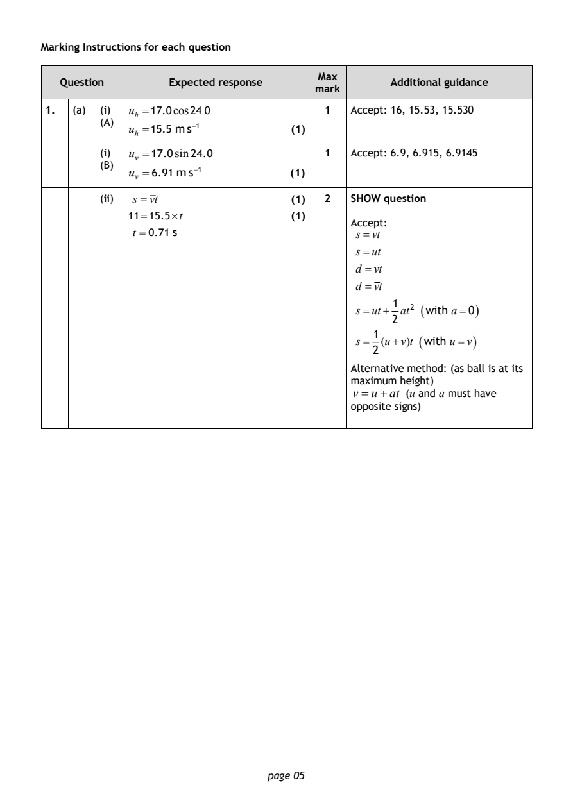
Selectable page text
Marking Instructions for each question
Max
Question Expected response Additional guidance
mark
1. (a) (i) uₕ =17.0cos24.0 1 Accept: 16, 15.53, 15.530
(A)
uₕ =15.5 ms⁻¹ (1)
(i) uᵥ =17.0sin24.0 1 Accept: 6.9, 6.915, 6.9145
(B)
uᵥ =6.91 ms⁻¹ (1)
(ii) s =vt (1) 2 SHOW question
11=15.5×t (1)
Accept:
t =0.71 s s=vt
s=ut
d =vt
d =vt
1
s=ut+ at² (with a=0)
2
1
s= (u+v)t (with u =v)
2
Alternative method: (as ball is at its
maximum height)
v =u+at (u and a must have
opposite signs)
page 05PDF page 6
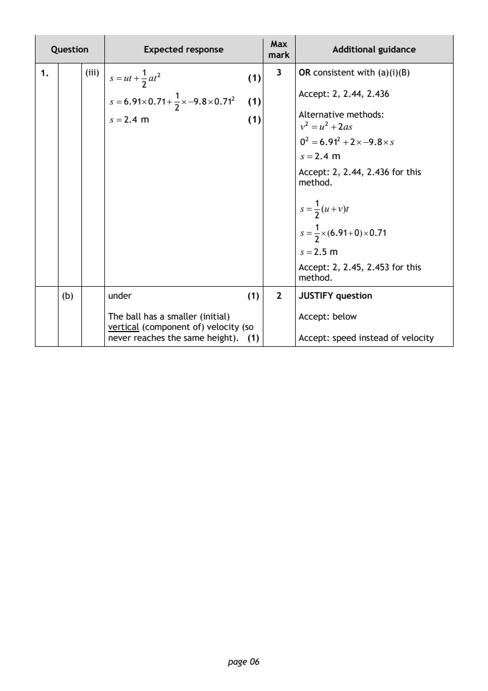
Selectable page text
Max
Question Expected response Additional guidance
mark
1. (iii) 1 3 OR consistent with (a)(i)(B)
s =ut+ at² (1)
2
1 Accept: 2, 2.44, 2.436
s =6.91×0.71+ ×−9.8×0.71² (1)
2
Alternative methods:
s =2.4 m (1)
v² =u² +2as
0² =6.91² +2×−9.8×s
s =2.4 m
Accept: 2, 2.44, 2.436 for this
method.
1
s= (u+v)t
2
1
s= ×(6.91+0)×0.71
2
s=2.5 m
Accept: 2, 2.45, 2.453 for this
method.
(b) under (1) 2 JUSTIFY question
The ball has a smaller (initial) Accept: below
vertical (component of) velocity (so
never reaches the same height). (1) Accept: speed instead of velocity
page 06PDF page 7
Paper 2, Question 2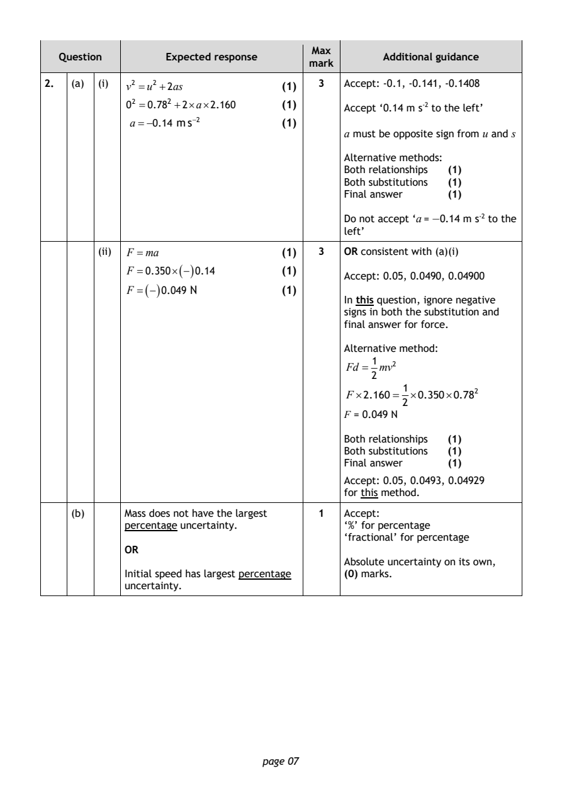
Selectable page text
Max
Question Expected response Additional guidance
mark
2. (a) (i) v² =u² +2as (1) 3 Accept: -0.1, -0.141, -0.1408
0² =0.78² +2×a×2.160 (1)
Accept ‘0.14 m s⁻² to the left’
a=−0.14 m s⁻² (1)
a must be opposite sign from u and s
Alternative methods:
Both relationships (1)
Both substitutions (1)
Final answer (1)
Do not accept ‘a= —0.14 m s⁻² to the
left’
(ii) F =ma (1) 3 OR consistent with (a)(i)
F =0.350×(−)0.14 (1)
Accept: 0.05, 0.0490, 0.04900
F =(−)0.049 N (1)
In this question, ignore negative
signs in both the substitution and
final answer for force.
Alternative method:
1
Fd = mv²
2
1
F×2.160= ×0.350×0.78²
2
F = 0.049 N
Both relationships (1)
Both substitutions (1)
Final answer (1)
Accept: 0.05, 0.0493, 0.04929
for this method.
(b) Mass does not have the largest 1 Accept:
percentage uncertainty. ‘%’ for percentage
‘fractional’ for percentage
OR
Absolute uncertainty on its own,
Initial speed has largest percentage (0) marks.
uncertainty.
page 07PDF page 8
Paper 2, Question 3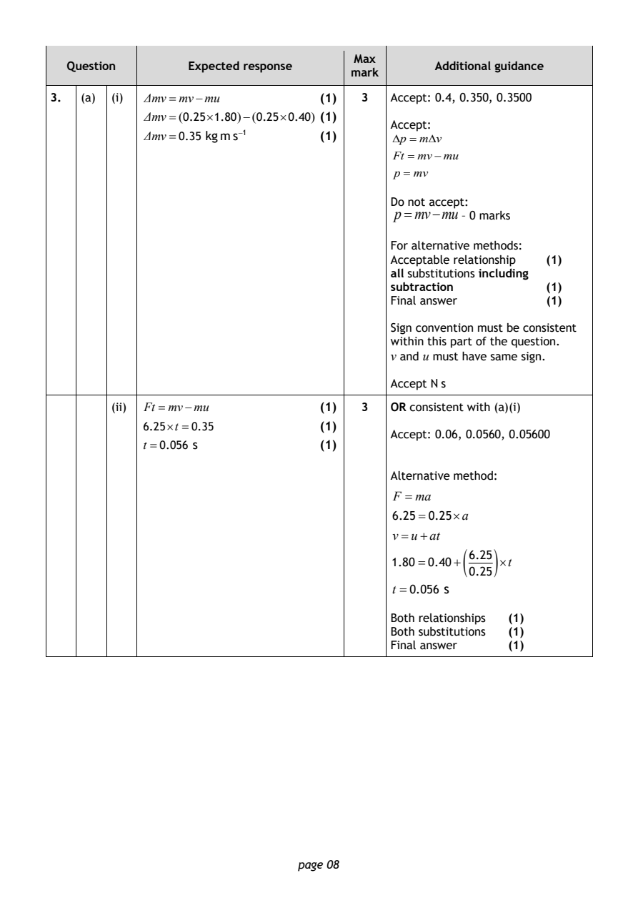
Selectable page text
Max
Question Expected response Additional guidance
mark
3. (a) (i) Δmv=mv−mu (1) 3 Accept: 0.4, 0.350, 0.3500
Δmv=(0.25×1.80)−(0.25×0.40) (1)
Accept:
Δmv=0.35 kg m s⁻¹ (1) ∆p=m∆v
Ft =mv−mu
p=mv
Do
p=ⁿ^{o}m^{t}v^{a}−^{c}^{c}m^{e}u^{p}^{t}–^{:} 0 marks
For alternative methods:
Acceptable relationship (1)
all substitutions including
subtraction (1)
Final answer (1)
Sign convention must be consistent
within this part of the question.
v and u must have same sign.
Accept N s
(ii) Ft =mv−mu (1) 3 OR consistent with (a)(i)
6.25×t =0.35 (1)
Accept: 0.06, 0.0560, 0.05600
t =0.056 s (1)
Alternative method:
F =ma
6.25=0.25×a
v=u+at
( )
6.25
1.80=0.40+ ×t
0.25
t =0.056 s
Both relationships (1)
Both substitutions (1)
Final answer (1)
page 08PDF page 9
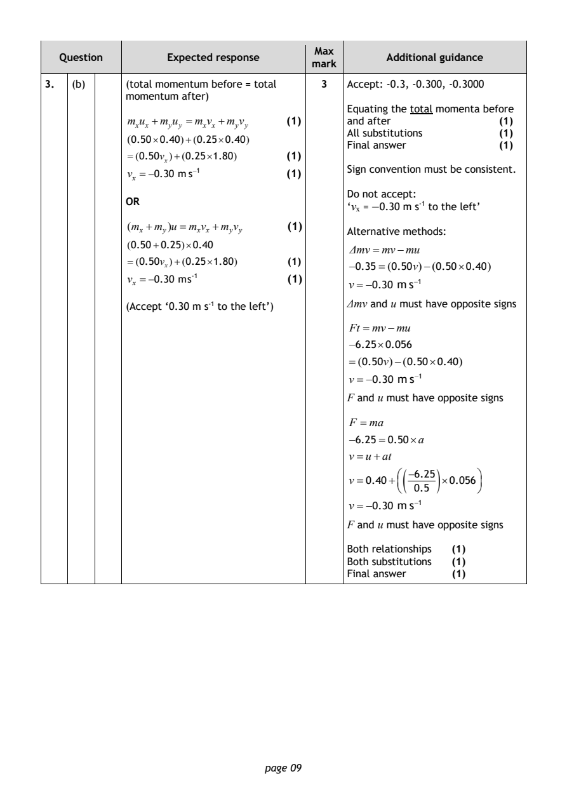
Selectable page text
Max
Question Expected response Additional guidance
mark
3. (b) (total momentum before = total 3 Accept: -0.3, -0.300, -0.3000
momentum after)
Equating the total momenta before
mₓuₓ +m_{y}u_{y} =mₓvₓ +m_{y}v_{y} (1) and after (1)
All substitutions (1)
(0.50×0.40)+(0.25×0.40)
Final answer (1)
=(0.50vₓ)+(0.25×1.80) (1)
Sign convention must be consistent.
vₓ =−0.30 m s⁻¹ (1)
Do not accept:
OR
‘v = —0.30 m s⁻¹ to the left’
x
(mₓ +m_{y})u =mₓvₓ +m_{y}v_{y} (1)
Alternative methods:
(0.50+0.25)×0.40
Δmv=mv−mu
=(0.50vₓ)+(0.25×1.80) (1)
−0.35=(0.50v)−(0.50×0.40)
vₓ =−0.30 m s⁻¹ (1)
v=−0.30 m s⁻¹
Δmv and u must have opposite signs
(Accept ‘0.30 m s⁻¹ to the left’)
Ft =mv−mu
−6.25×0.056
=(0.50v)−(0.50×0.40)
v=−0.30 m s⁻¹
F and u must have opposite signs
F =ma
−6.25=0.50×a
v=u+at
( )
−6.25
v=0.40+ ×0.056
0.5
v=−0.30 m s⁻¹
F and u must have opposite signs
Both relationships (1)
Both substitutions (1)
Final answer (1)
page 09PDF page 10
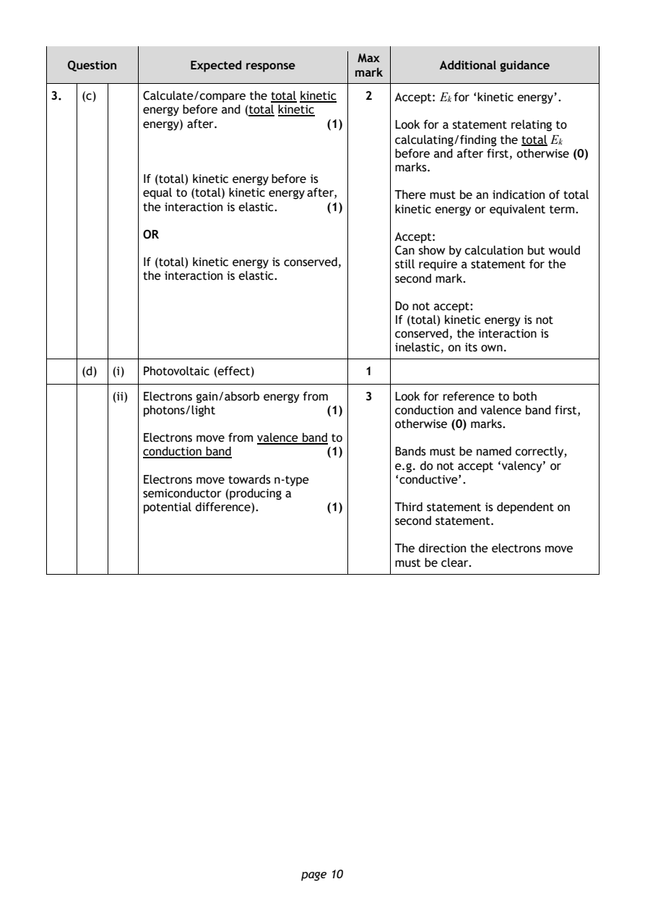
Selectable page text
Max
Question Expected response Additional guidance
mark
3. (c) Calculate/compare the total kinetic 2 Accept: Eₖfor ‘kinetic energy’.
energy before and (total kinetic
energy) after. (1) Look for a statement relating to
calculating/finding the total E
before and after first, otherwis^{k}e (0)
marks.
If (total) kinetic energy before is
equal to (total) kinetic energy after, There must be an indication of total
the interaction is elastic. (1) kinetic energy or equivalent term.
OR Accept:
Can show by calculation but would
If (total) kinetic energy is conserved, still require a statement for the
the interaction is elastic. second mark.
Do not accept:
If (total) kinetic energy is not
conserved, the interaction is
inelastic, on its own.
(d) (i) Photovoltaic (effect) 1
(ii) Electrons gain/absorb energy from 3 Look for reference to both
photons/light (1) conduction and valence band first,
otherwise (0) marks.
Electrons move from valence band to
conduction band (1) Bands must be named correctly,
e.g. do not accept ‘valency’ or
Electrons move towards n-type ‘conductive’.
semiconductor (producing a
potential difference). (1) Third statement is dependent on
second statement.
The direction the electrons move
must be clear.
page 10PDF page 11
Paper 2, Question 4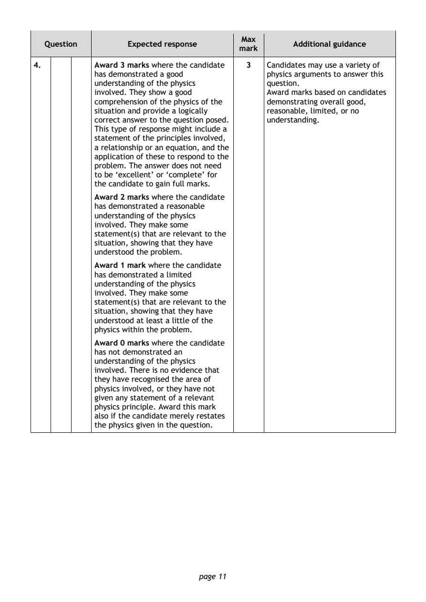
Selectable page text
Max
Question Expected response Additional guidance
mark
4. Award 3 marks where the candidate 3 Candidates may use a variety of
has demonstrated a good physics arguments to answer this
understanding of the physics question.
involved. They show a good Award marks based on candidates
comprehension of the physics of the demonstrating overall good,
situation and provide a logically reasonable, limited, or no
correct answer to the question posed. understanding.
This type of response might include a
statement of the principles involved,
a relationship or an equation, and the
application of these to respond to the
problem. The answer does not need
to be ‘excellent’ or ‘complete’ for
the candidate to gain full marks.
Award 2 marks where the candidate
has demonstrated a reasonable
understanding of the physics
involved. They make some
statement(s) that are relevant to the
situation, showing that they have
understood the problem.
Award 1 mark where the candidate
has demonstrated a limited
understanding of the physics
involved. They make some
statement(s) that are relevant to the
situation, showing that they have
understood at least a little of the
physics within the problem.
Award 0 marks where the candidate
has not demonstrated an
understanding of the physics
involved. There is no evidence that
they have recognised the area of
physics involved, or they have not
given any statement of a relevant
physics principle. Award this mark
also if the candidate merely restates
the physics given in the question.
page 11PDF page 12
Paper 2, Question 5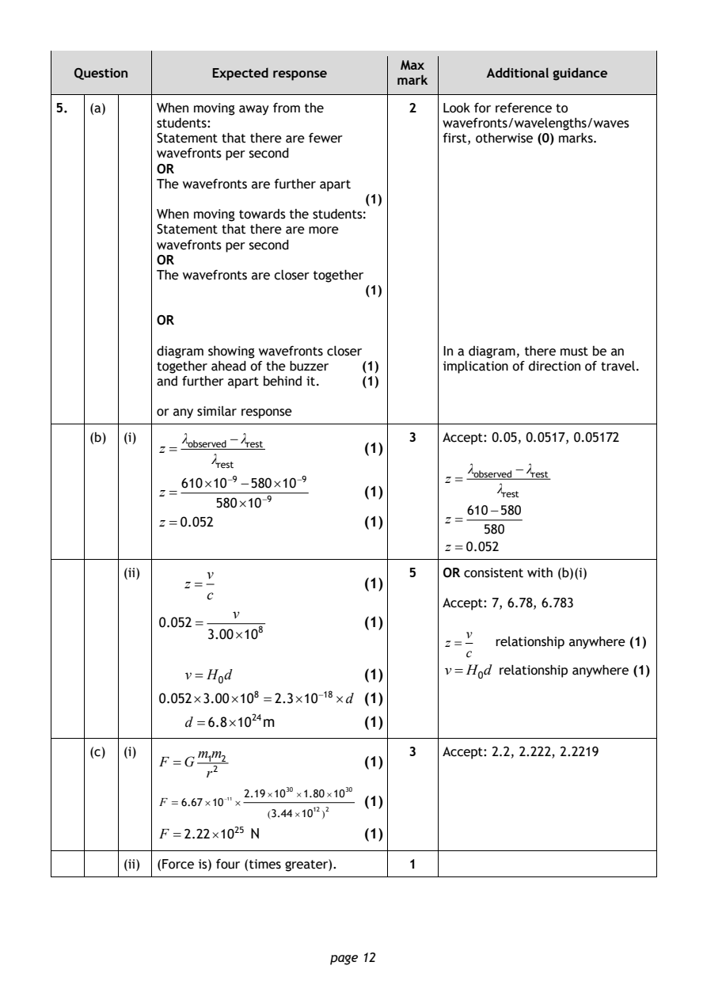
Selectable page text
Max
Question Expected response Additional guidance
mark
5. (a) When moving away from the 2 Look for reference to
students: wavefronts/wavelengths/waves
Statement that there are fewer first, otherwise (0) marks.
wavefronts per second
OR
The wavefronts are further apart
(1)
When moving towards the students:
Statement that there are more
wavefronts per second
OR
The wavefronts are closer together
(1)
OR
diagram showing wavefronts closer In a diagram, there must be an
together ahead of the buzzer (1) implication of direction of travel.
and further apart behind it. (1)
or any similar response
(b) (i) λₒ_{b}ₛₑᵣᵥ −λᵣₑₛₜ 3 Accept: 0.05, 0.0517, 0.05172
z = ed (1)
λᵣₑₛₜ
λₒ_{b}ₛₑᵣ −λᵣₑₛₜ
z = ved
610×10⁻⁹ −580×10⁻⁹
z = (1) λᵣₑₛₜ
580×10⁻⁹
610−580
z =0.052 (1) z =
580
z =0.052
(ii) v 5 OR consistent with (b)(i)
z = (1)
c
Accept: 7, 6.78, 6.783
v
0.052= (1)
3.00×10⁸ v
z = relationship anywhere (1)
c
v=H₀d relationship anywhere (1)
v= H₀d (1)
0.052×3.00×10⁸ =2.3×10⁻¹⁸×d (1)
d =6.8×10²⁴m (1)
(c) (i) m₁m₂ 3 Accept: 2.2, 2.222, 2.2219
F =G (1)
r²
2.19×10³⁰ ×1.80×10³⁰
F =6.67×10⁻¹¹× (1)
(3.44×10¹²)²
F =2.22×10²⁵ N (1)
(ii) (Force is) four (times greater). 1
page 12PDF page 13
Paper 2, Question 6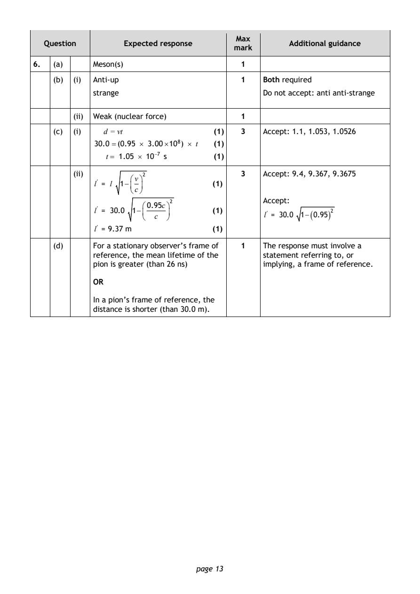
Selectable page text
Max
Question Expected response Additional guidance
mark
6. (a) Meson(s) 1
(b) (i) Anti-up 1 Both required
strange Do not accept: anti anti-strange
(ii) Weak (nuclear force) 1
(c) (i) d =vt (1) 3 Accept: 1.1, 1.053, 1.0526
30.0 =(0.95 × 3.00×10⁸) × t (1)
t = 1.05 × 10⁻⁷ s (1)
(ii) 3 Accept: 9.4, 9.367, 9.3675
v²
l^{'} = l 1− (1)
c
Accept:
0.95c²
l^{'} = 30.0 1− (1)
c l^{'} = 30.0 1−(0.95)²
l^{'} = 9.37 m (1)
(d) For a stationary observer’s frame of 1 The response must involve a
reference, the mean lifetime of the statement referring to, or
pion is greater (than 26 ns) implying, a frame of reference.
OR
In a pion’s frame of reference, the
distance is shorter (than 30.0 m).
page 13PDF page 14
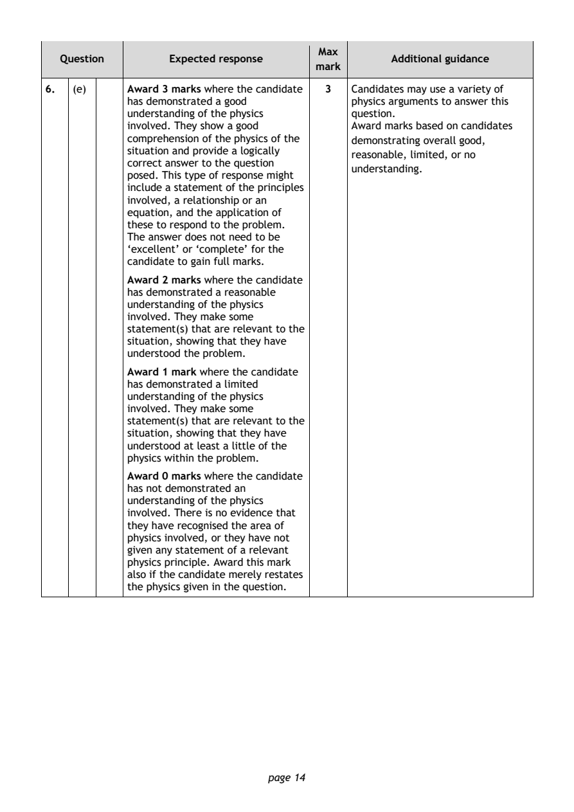
Selectable page text
Max
Question Expected response Additional guidance
mark
6. (e) Award 3 marks where the candidate 3 Candidates may use a variety of
has demonstrated a good physics arguments to answer this
understanding of the physics question.
involved. They show a good Award marks based on candidates
comprehension of the physics of the demonstrating overall good,
situation and provide a logically
reasonable, limited, or no
correct answer to the question
understanding.
posed. This type of response might
include a statement of the principles
involved, a relationship or an
equation, and the application of
these to respond to the problem.
The answer does not need to be
‘excellent’ or ‘complete’ for the
candidate to gain full marks.
Award 2 marks where the candidate
has demonstrated a reasonable
understanding of the physics
involved. They make some
statement(s) that are relevant to the
situation, showing that they have
understood the problem.
Award 1 mark where the candidate
has demonstrated a limited
understanding of the physics
involved. They make some
statement(s) that are relevant to the
situation, showing that they have
understood at least a little of the
physics within the problem.
Award 0 marks where the candidate
has not demonstrated an
understanding of the physics
involved. There is no evidence that
they have recognised the area of
physics involved, or they have not
given any statement of a relevant
physics principle. Award this mark
also if the candidate merely restates
the physics given in the question.
page 14PDF page 15
Paper 2, Question 7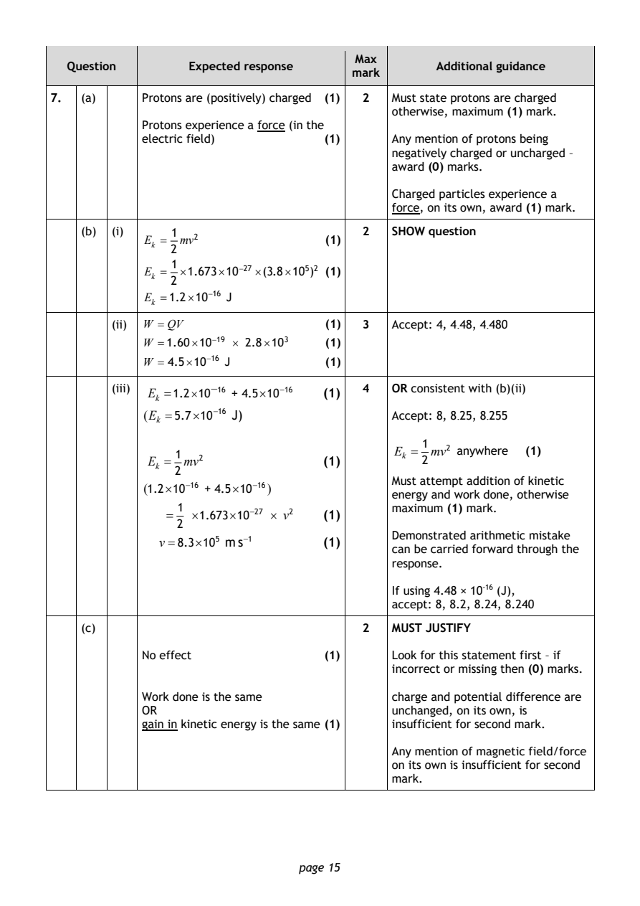
Selectable page text
Max
Question Expected response Additional guidance
mark
7. (a) Protons are (positively) charged (1) 2 Must state protons are charged
otherwise, maximum (1) mark.
Protons experience a force (in the
electric field) (1) Any mention of protons being
negatively charged or uncharged –
award (0) marks.
Charged particles experience a
force, on its own, award (1) mark.
(b) (i) 1 2 SHOW question
Eₖ = mv² (1)
2
1
Eₖ = ×1.673×10⁻²⁷ ×(3.8×10⁵)² (1)
2
Eₖ =1.2×10⁻¹⁶ J
(ii) W =QV (1) 3 Accept: 4, 4.48, 4.480
W =1.60×10⁻¹⁹ × 2.8×10³ (1)
W = 4.5×10⁻¹⁶ J (1)
(iii) − 4 OR consistent with (b)(ii)
Eₖ =1.2×10 ¹⁶ + 4.5×10⁻¹⁶ (1)
(Eₖ =5.7×10⁻¹⁶ J) Accept: 8, 8.25, 8.255
1
1 Eₖ = mv² anywhere (1)
Eₖ = mv² (1) 2
2
Must attempt addition of kinetic
(1.2×10⁻¹⁶ + 4.5×10⁻¹⁶)
energy and work done, otherwise
1 maximum (1) mark.
= ×1.673×10⁻²⁷ × v² (1)
2
Demonstrated arithmetic mistake
v=8.3×10⁵ m s⁻¹ (1)
can be carried forward through the
response.
If using 4.48 × 10⁻¹⁶ (J),
accept: 8, 8.2, 8.24, 8.240
(c) 2 MUST JUSTIFY
No effect (1) Look for this statement first – if
incorrect or missing then (0) marks.
Work done is the same charge and potential difference are
OR unchanged, on its own, is
gain in kinetic energy is the same (1) insufficient for second mark.
Any mention of magnetic field/force
on its own is insufficient for second
mark.
page 15PDF page 16
Paper 2, Question 8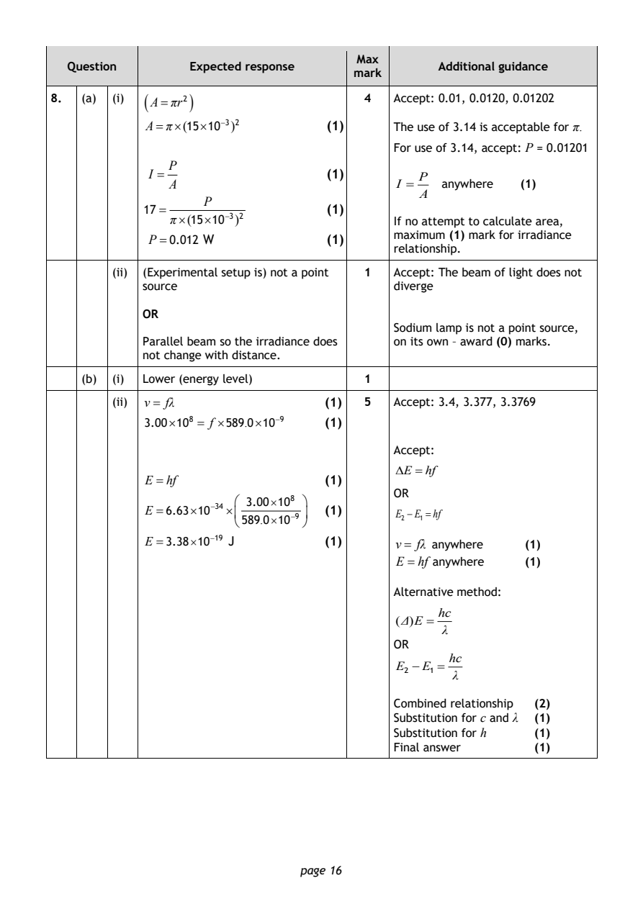
Selectable page text
Max
Question Expected response Additional guidance
mark
8. (a) (i) ( ) 4 Accept: 0.01, 0.0120, 0.01202
A=πr²
A=π×(15×10⁻³)² (1) The use of 3.14 is acceptable for π.
For use of 3.14, accept: P = 0.01201
P
I = (1) P
A I = anywhere (1)
A
P
17 = (1)
π×(15×10⁻³)² If no attempt to calculate area,
maximum (1) mark for irradiance
P=0.012 W (1)
relationship.
(ii) (Experimental setup is) not a point 1 Accept: The beam of light does not
source diverge
OR
Sodium lamp is not a point source,
Parallel beam so the irradiance does on its own – award (0) marks.
not change with distance.
(b) (i) Lower (energy level) 1
(ii) v= fλ (1) 5 Accept: 3.4, 3.377, 3.3769
3.00×10⁸ = f ×589.0×10⁻⁹ (1)
Accept:
∆E =hf
E =hf (1)
OR
3.00×10⁸
E =6.63×10⁻³⁴×
(1)
E₂−E₁=hf
589.0×10⁻⁹
E =3.38×10⁻¹⁹ J (1) v= fλ anywhere (1)
E =hf anywhere (1)
Alternative method:
hc
(Δ)E =
λ
OR
hc
E₂ −E₁ =
λ
Combined relationship (2)
Substitution for c and λ (1)
Substitution for h (1)
Final answer (1)
page 16PDF page 17
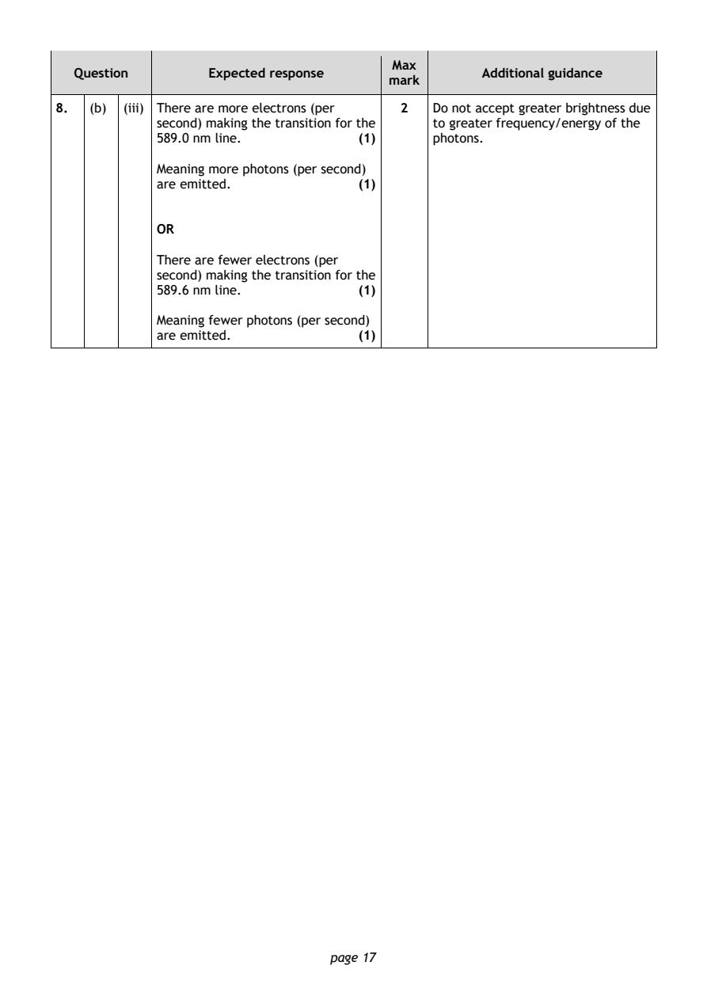
Selectable page text
Max
Question Expected response Additional guidance
mark
8. (b) (iii) There are more electrons (per 2 Do not accept greater brightness due
second) making the transition for the to greater frequency/energy of the
589.0 nm line. (1) photons.
Meaning more photons (per second)
are emitted. (1)
OR
There are fewer electrons (per
second) making the transition for the
589.6 nm line. (1)
Meaning fewer photons (per second)
are emitted. (1)
page 17PDF page 18
Paper 2, Question 9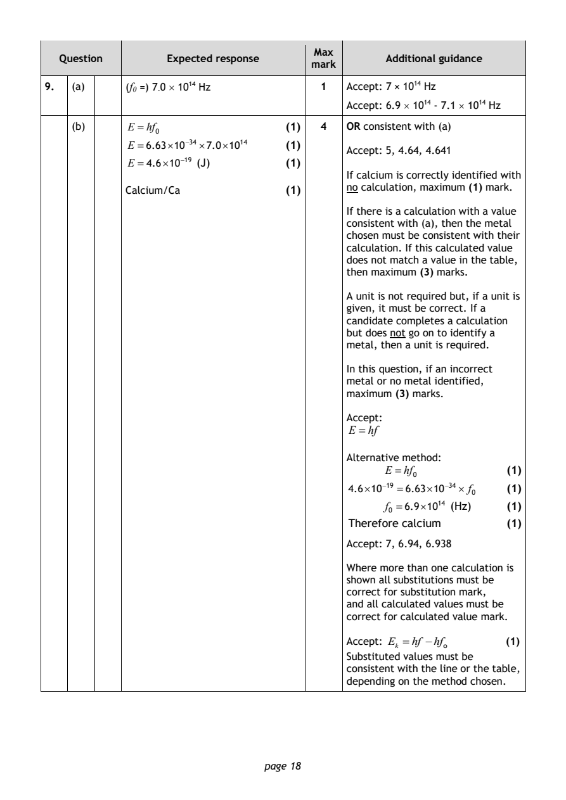
Selectable page text
Max
Question Expected response Additional guidance
mark
9. (a) (f =) 7.0 × 10¹⁴ Hz 1 Accept: 7 × 10¹⁴ Hz
0
Accept: 6.9 × 10¹⁴ - 7.1 × 10¹⁴ Hz
(b) E =hf₀ (1) 4 OR consistent with (a)
E =6.63×10⁻³⁴×7.0×10¹⁴ (1)
Accept: 5, 4.64, 4.641
E =4.6×10⁻¹⁹ (J) (1)
If calcium is correctly identified with
Calcium/Ca (1) no calculation, maximum (1) mark.
If there is a calculation with a value
consistent with (a), then the metal
chosen must be consistent with their
calculation. If this calculated value
does not match a value in the table,
then maximum (3) marks.
A unit is not required but, if a unit is
given, it must be correct. If a
candidate completes a calculation
but does not go on to identify a
metal, then a unit is required.
In this question, if an incorrect
metal or no metal identified,
maximum (3) marks.
Accept:
E =hf
Alternative method:
E =hf₀ (1)
4.6×10⁻¹⁹ =6.63×10⁻³⁴× f₀ (1)
f₀ =6.9×10¹⁴ (Hz) (1)
Therefore calcium (1)
Accept: 7, 6.94, 6.938
Where more than one calculation is
shown all substitutions must be
correct for substitution mark,
and all calculated values must be
correct for calculated value mark.
Accept: Eₖ =hf −hfₒ (1)
Substituted values must be
consistent with the line or the table,
depending on the method chosen.
page 18PDF page 19
Paper 2, Question 10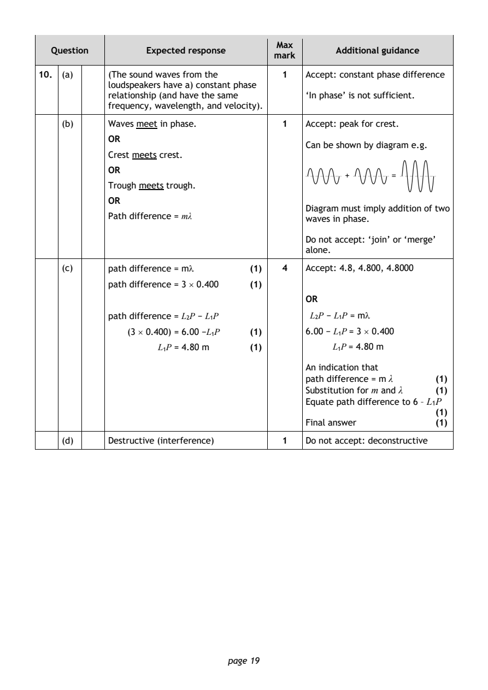
Selectable page text
Max
Question Expected response Additional guidance
mark
10. (a) (The sound waves from the 1 Accept: constant phase difference
loudspeakers have a) constant phase
relationship (and have the same ‘In phase’ is not sufficient.
frequency, wavelength, and velocity).
(b) Waves meet in phase. 1 Accept: peak for crest.
OR
Can be shown by diagram e.g.
Crest meets crest.
OR
Trough meets trough.
OR
Diagram must imply addition of two
Path difference = mλ waves in phase.
Do not accept: ‘join’ or ‘merge’
alone.
(c) path difference = mλ (1) 4 Accept: 4.8, 4.800, 4.8000
path difference = 3 × 0.400 (1)
OR
path difference = L P − L P L P − L P = mλ
2 1 2 1
(3 × 0.400) = 6.00 −L P (1) 6.00 − L P = 3 × 0.400
1 1
L P = 4.80 m (1) L P = 4.80 m
1 1
An indication that
path difference = m λ (1)
Substitution for m and λ (1)
Equate path difference to 6 – L₁P
(1)
Final answer (1)
(d) Destructive (interference) 1 Do not accept: deconstructive
page 19PDF page 20
Paper 2, Question 11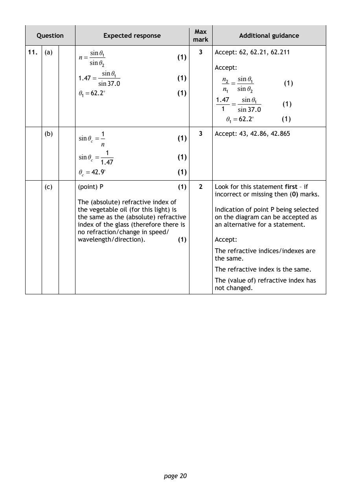
Selectable page text
Max
Question Expected response Additional guidance
mark
11. (a) sinθ₁ 3 Accept: 62, 62.21, 62.211
n= (1)
sinθ₂
Accept:
sinθ₁
1.47 = (1) n₂ sinθ₁
sin37.0 = (1)
n₁ sinθ₂
θ₁=62.2 (1)
1.47 sinθ₁
= (1)
1 sin37.0
θ₁ =62.2 (1)
(b) 1 3 Accept: 43, 42.86, 42.865
sinθ_{c} = (1)
n
1
sinθ_{c} = (1)
1.47
θ_{c} =42.9 (1)
(c) (point) P (1) 2 Look for this statement first – if
incorrect or missing then (0) marks.
The (absolute) refractive index of
the vegetable oil (for this light) is Indication of point P being selected
the same as the (absolute) refractive on the diagram can be accepted as
index of the glass (therefore there is an alternative for a statement.
no refraction/change in speed/
wavelength/direction). (1) Accept:
The refractive indices/indexes are
the same.
The refractive index is the same.
The (value of) refractive index has
not changed.
page 20PDF page 21
Paper 2, Question 12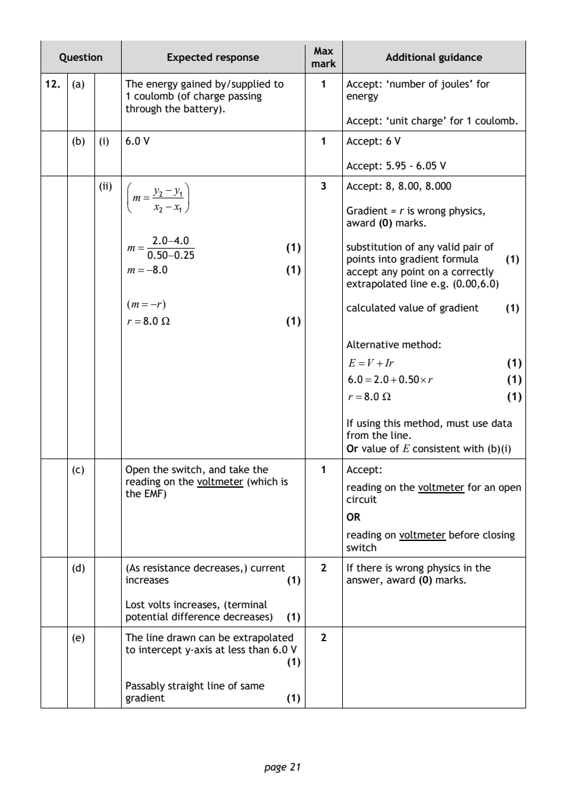
Selectable page text
Max
Question Expected response Additional guidance
mark
12. (a) The energy gained by/supplied to 1 Accept: ‘number of joules’ for
1 coulomb (of charge passing energy
through the battery).
Accept: ‘unit charge’ for 1 coulomb.
(b) (i) 6.0 V 1 Accept: 6 V
Accept: 5.95 - 6.05 V
(ii) y₂ − y₁ 3 Accept: 8, 8.00, 8.000
m=
x₂ −x₁ Gradient = r is wrong physics,
award (0) marks.
2.0−4.0
m= (1) substitution of any valid pair of
0.50−0.25
points into gradient formula (1)
m=−8.0 (1) accept any point on a correctly
extrapolated line e.g. (0.00,6.0)
(m=−r)
calculated value of gradient (1)
r =8.0 Ω (1)
Alternative method:
E =V +Ir (1)
6.0=2.0+0.50×r (1)
r =8.0 Ω (1)
If using this method, must use data
from the line.
Or value of E consistent with (b)(i)
(c) Open the switch, and take the 1 Accept:
reading on the voltmeter (which is
reading on the voltmeter for an open
the EMF)
circuit
OR
reading on voltmeter before closing
switch
(d) (As resistance decreases,) current 2 If there is wrong physics in the
increases (1) answer, award (0) marks.
Lost volts increases, (terminal
potential difference decreases) (1)
(e) The line drawn can be extrapolated 2
to intercept y-axis at less than 6.0 V
(1)
Passably straight line of same
gradient (1)
page 21PDF page 22
Paper 2, Question 13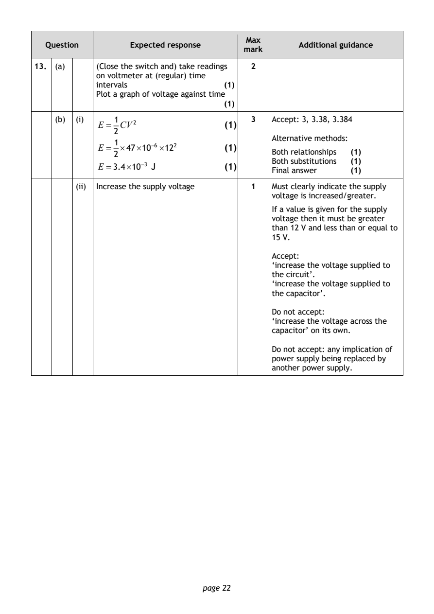
Selectable page text
Max
Question Expected response Additional guidance
mark
13. (a) (Close the switch and) take readings 2
on voltmeter at (regular) time
intervals (1)
Plot a graph of voltage against time
(1)
(b) (i) 1 3 Accept: 3, 3.38, 3.384
E = CV² (1)
2
Alternative methods:
1
E = ×47×10⁻⁶×12² (1)
Both relationships (1)
2
Both substitutions (1)
E =3.4×10⁻³ J (1)
Final answer (1)
(ii) Increase the supply voltage 1 Must clearly indicate the supply
voltage is increased/greater.
If a value is given for the supply
voltage then it must be greater
than 12 V and less than or equal to
15 V.
Accept:
‘increase the voltage supplied to
the circuit’.
‘increase the voltage supplied to
the capacitor’.
Do not accept:
‘increase the voltage across the
capacitor’ on its own.
Do not accept: any implication of
power supply being replaced by
another power supply.
page 22PDF page 23
Paper 2, Question 14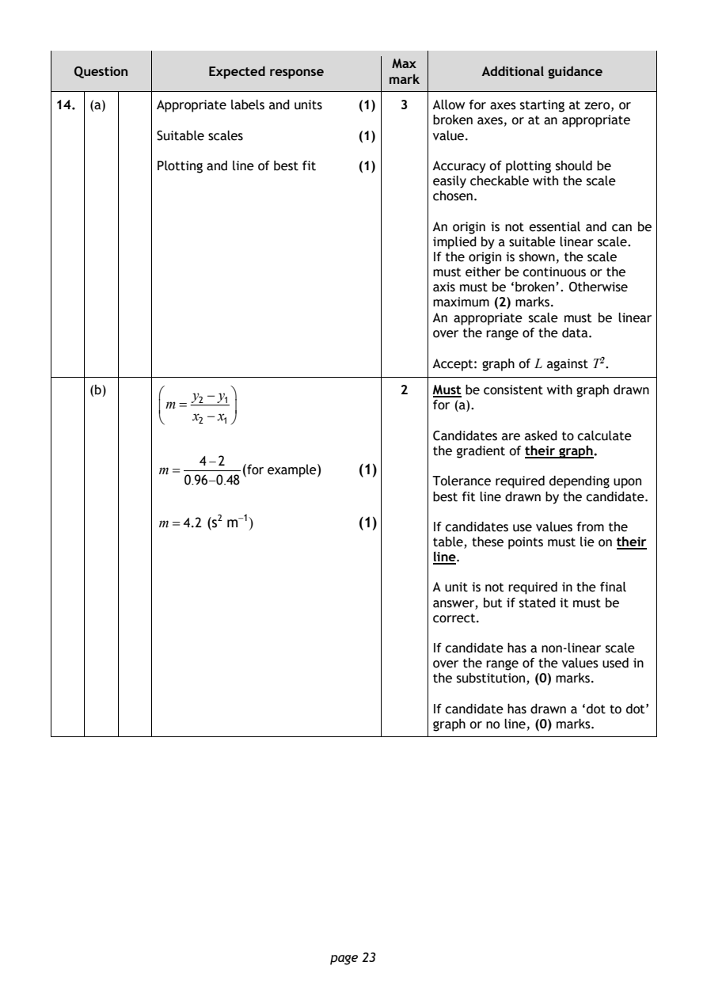
Selectable page text
Max
Question Expected response Additional guidance
mark
14. (a) Appropriate labels and units (1) 3 Allow for axes starting at zero, or
broken axes, or at an appropriate
Suitable scales (1) value.
Plotting and line of best fit (1) Accuracy of plotting should be
easily checkable with the scale
chosen.
An origin is not essential and can be
implied by a suitable linear scale.
If the origin is shown, the scale
must either be continuous or the
axis must be ‘broken’. Otherwise
maximum (2) marks.
An appropriate scale must be linear
over the range of the data.
Accept: graph of L against T².
(b) y₂ − y₁ 2 Must be consistent with graph drawn
m= for (a).
x₂ −x₁
Candidates are asked to calculate
the gradient of their graph.
4−2
m= (for example) (1)
0.96−0.48 Tolerance required depending upon
best fit line drawn by the candidate.
m=4.2 (s² m⁻¹) (1)
If candidates use values from the
table, these points must lie on their
line.
A unit is not required in the final
answer, but if stated it must be
correct.
If candidate has a non-linear scale
over the range of the values used in
the substitution, (0) marks.
If candidate has drawn a ‘dot to dot’
graph or no line, (0) marks.
page 23PDF page 24
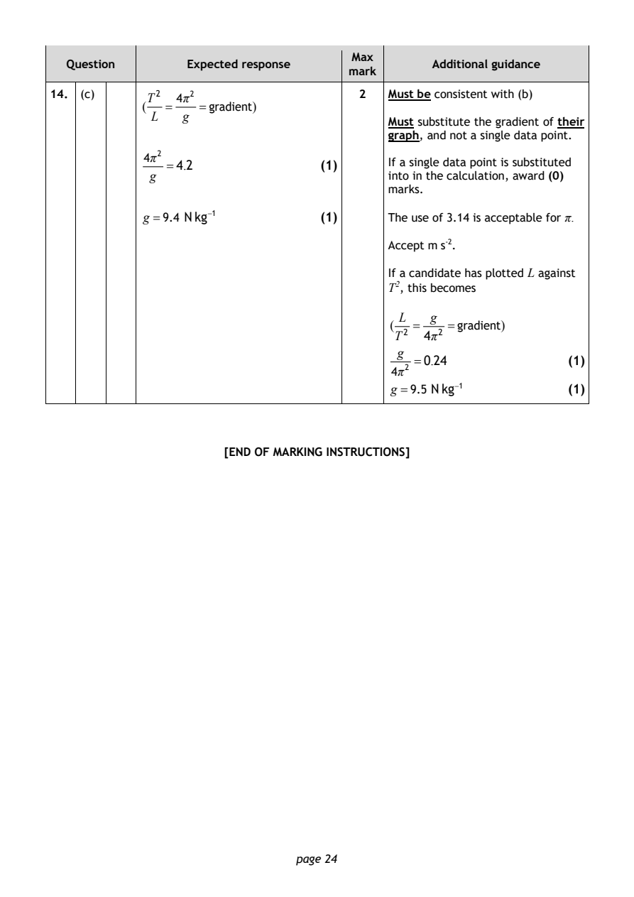
Selectable page text
Max
Question Expected response Additional guidance
mark
14. (c) T² 4π² 2 Must be consistent with (b)
( = =gradient)
L g
Must substitute the gradient of their
graph, and not a single data point.
4π²
=4.2 (1) If a single data point is substituted
g into in the calculation, award (0)
marks.
g =9.4 N kg⁻¹ (1) The use of 3.14 is acceptable for π.
Accept m s⁻².
If a candidate has plotted L against
T², this becomes
L g
( = =gradient)
T² 4π²
g
=0.24 (1)
4π²
g =9.5 N kg⁻¹ (1)
[END OF MARKING INSTRUCTIONS]
page 24